# 工作流（Workflow）
是对工作流程及其各操作步骤之间业务规则的抽象、概括描述。工作流建模，即将工作流程中的工作如何前后组织在一起的逻辑和规则，在计算机中以恰当的模型表达并对其实施计算。工作流要解决的主要问题是：为实现某个业务目标，利用计算机在多个参与者之间按某种预定规则自动传递文档、信息或者任务。（Wikipedia）
简而言之，工作流是对业务的流程化抽象，使用工作流引擎来实现低代码 / 自动化管理业务。
WFMC 给出了工作流参考模型如下：
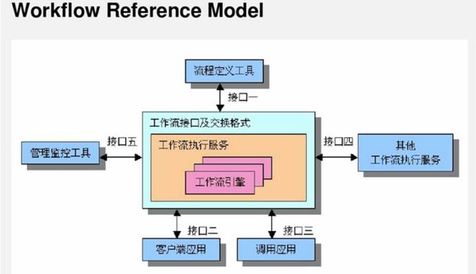
# 为什么我们需要工作流
相信大家都了解流水线的好处，蒸汽时代就是将手工化转变成了流水线化，手工有明显的一个缺点，就是生产效率极低，而流水线则可以提高生成效率。
那么工作流则是将业务流水线化，从原来的一团处理逻辑清晰的划分成为若干个步骤，每个步骤流转清晰明显。每个模块有非常高的内聚，模块之前有非常清晰的依赖。
外网最高的工作流的优点回答如下：
Workflows can help streamline and automate repeatable business tasks, minimizing room for errors and increasing overall efficiency. This, in turn, dramatically improves your business. Managers can make quicker, smarter decisions and employees are empowered to collaborate in a more productive and agile way.
举个例子，退款本身非常复杂，运营、产品、技术、财务可能都无法从单一的角色来解释清楚到底退款的整个链路和关键环节，但是通过工作流的方式来呈现，则所有人能快速看到退款到底是个什么样的业务。
（工作流解决的痛点在于，解除业务宏观流程和微观逻辑的耦合，让熟悉宏观业务流程的人去制定整套流转逻辑，而让专业的人只需要关心他们应当关心的流程节点，就好比大家要一起修建一座超级体育场，路人甲只需要关心他身边的这一堆砖是怎么堆砌而非整座建筑。）
根据实际业务中对工作流的大量使用，我们总结出工作流有以下的优点：
# 业务可视化
首先，最大的优点，就是可以借助工作流引擎，让业务可视化，可以通过视图看到整个业务流程，每个节点执行什么业务逻辑一目了然，分支处理、异常处理也非常清晰。
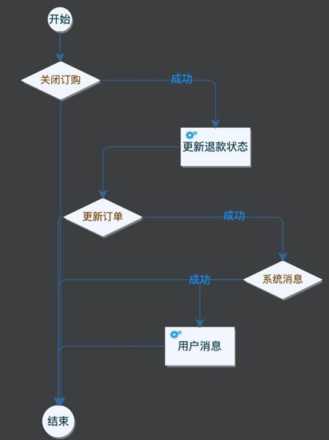
# 业务可编排
如果业务永远不变化，那么我们硬编码在一个方法里也无所谓。但是我们知道业务是千变万化的，软件设计很重要的一个指标就是灵活可扩展。工作流流程的重编排，则可以使得业务进一步在代码层面增加灵活性。可以通过节点的调整来快速调整业务流程，可以灵活增删节点，而不至于对整个流程有影响。
还是以上面的为例，如果要增加一个【关闭用户权益】的节点，或者删除【用户消息】，那么我们很容易利用工作流增删原有流程。这里实现了代码可维护里最核心的两点：改动代码最简单和改动代码最快。
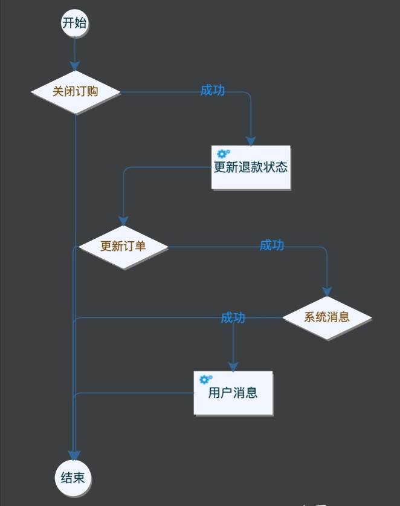
# 自动重试
对于某些工作流来说，工作流引擎提供了框架层面持久化和自动重试的能力。
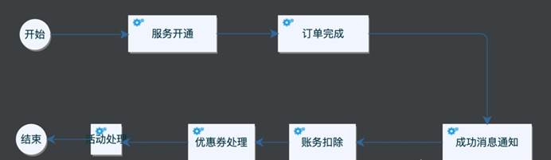
上述是实际交易生产系统接收支付宝支付成功后回调后要处理的异步流程。而且在业务变化时，还需要对流程里动态增删业务功能。由于像【优惠券处理】或者【活动处理】节点依赖条件较多，很可能会处理失败需要重试，但是又不想把所有节点重试一遍，此时工作流引擎的持久化和节点重试能力，则是非常完美的方案。
# 工作流引擎
我们明白什么是工作流的定义以及为什么需要工作流。那么工作流引擎则是实现驱动工作流的一套实现工具。工作流本质上是业务流的抽象，因此不同分类的业务流则形成了不同的工作流，进而有不同的工作流引擎来负责对不同类别的工作流进行具体的定义和实现。
市场上比较有名的开源流程引擎有 osworkflow、jbpm、activitiy、flowable、camunda。其中：Jbpm4、Activiti、Flowable、camunda 四个框架同宗同源，祖先都是 Jbpm4，开发者只要用过其中一个框架，基本上就会用其它三个。开发低代码平台、OA 系统（Office Automation System，办公自动化系统）、BPM 软件均需要流程可视化功能，而流程可视化核心是流程引擎和流程设计器，我们常说的工作流引擎，一般都包括设计器的能力，即负责对业务流程的拖拽式工具，有插件式也有 WEB 云端式的。（可视化工具）
对于市场上如此多的开源流程引擎，哪个功能和性能好，该如何选型呢？
名词解释
- BPMN（Business Process Modeling Notation）：指业务流程建模与符号
- CMMN (Case Management Model and Notation)：案例管理模型与符号
- DMN (Decision Model and Notation)：决策模型与符号
- 表单引擎 (Form Engine)
- PVM（Process Virtual Machine）：流程虚拟机，特定可执行的图形化开发框架
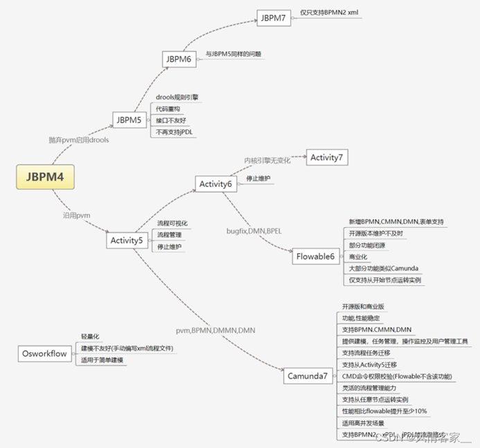
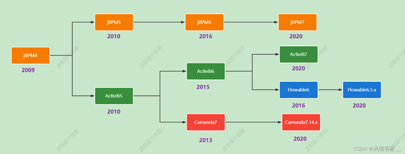
# 工作流引擎 选型
# Osworkflow (简单的流程)
官方网站：http://www.opensymphony.com/osworkflow/
Osworkflow 是一个轻量化的流程引擎，比较灵活的轻量级的框架，但是在流程建模方面不太友好，需要手动编写 xml 文件去定义流程文件。
Osworkflow 基于状态机机制，数据库表很少，Osworkflow 提供的工作流构成元素有：步骤（step）、条件（conditions）、循环（loops）、分支（splits）、合并（joins）等，但不支持会签、跳转、退回、加签等这些操作，需要自己扩展开发，有一定难度。而且 OsWorkFlow 组件已过时，长时间没有版本升级了。
JBPM（国内生态没那么好，不建议选择 jBPM5 以后版本）
Github: https://github.com/kiegroup/jbpm
jBPM 是一套灵活的商业进程管理 (BPM) 套件。轻量、开源 (基于 Apache License 2.0) 、使用 Java 实现。你可以用于商业进程与案例整个生命周期中的建模、执行与监控。
JBPM 由 JBoss 公司开发，目前最高版本 JPBM7，不过从 JBPM5 开始已经跟之前不是同一个产品了，JBPM5 的代码基础不是 JBPM4，而是从 Drools Flow 重新开始。
JBPM 自从版本五后，便重启炉灶，完全抛弃了 JBMP4 的代码基础，重新基于 drools 进行了实现。JBPM5，JBPM6 似乎缺少一个合格的系统架构师，其接口设计匪夷所思，基本上是按照 drools 的接口再提供了一套 JBPM 接口，同名的接口，实现类不断重复出现，代码体系十分混乱。基于 Drools Flow 技术在国内市场上用的很少，所有不建议选择 jBPM5 以后版本。
JBPM5，JBPM6 是一个巨大的失败，使用 drools 规则引擎来实现工作流引擎听起来是一个很酷的概念，但 JBPM 开发团队显然没有很好地去掌控好整个架构的变化。因此选择 activiti 作为工作流引擎至少在可见的几年间都是正道，今后需要实现规则库时，再单独引入 drools 工具包，相信 drools 会是一个比 JBPM 靠谱的工具。
jBPM4 诞生的比较早，后来 JBPM4 创建者 Tom Baeyens 离开 JBoss 后，加入 Alfresco 后很快推出了新的基于 jBPM4 的开源工作流系统 Activiti, 另外 JBPM 以 hibernate 作为数据持久化 ORM 也已不是主流技术。笔者在 2012 年开发某集团 BPM 平台时，选择的就是 JBPM4.4 版本，也是 4 系列的最后一个版本，进行了大量的扩展开发，才实现中国特色的流程需求。现在时间节点（2023）选择流程引擎，JBPM 不是最佳选择。官方网站：https://www.jbpm.org/
- jBPM3 是一个完整的工作流系统实现，面向开发人员，目的在于简化对组织核心流程进行支撑的软件创建，不支持标准。
- jBPM4 引入 PVM，使其拥有更强大的扩展性，同时增加 BPMS 特性，这些特性包括了对 BPMN 的支持、面向业务人员的 Web 建模器和简单统计分析功能的加入。
- jBPM5 基于原先的 Drools Flow，支持 BPMN，通过与 Drools 的合并支持 BAM，通过内容仓库增加对流程可视化的支持。由于放弃了 jBPM4 的 PVM，引擎的可扩展性受到损害，并且不再支持 jPDL。
# Activiti（版本复杂）
官方网站：https://www.activiti.org/
activiti 由 Alfresco 软件开发，目前（2023）最高版本 activiti 7。版本比较复杂，有 activiti5、activiti6、activiti7 几个主流版本，选型时让人晕头转向，有必要先了解一下 activiti 这几个版本的发展历史。
activiti5 和 activiti6 的核心 leader 是 Tijs Rademakers， Activiti5 基于 jBPM4 的开源工作流系统，与 Alfresco 的集成增加了其流程可视化与管理能力，同时通过创新的 Activiti Cycle 协作组件支持流程相关人员之间的协调，最后，它加强了集成能力。
由于团队内部分歧，在 2017 年时 Tijs Rademakers 离开团队，创建了后来的 flowable, activiti6 以及 activiti5 代码已经交接给了 Salaboy 团队，activiti6**** 以及 activiti5 的代码官方已经暂停维护了，Salaboy 团队目前在开发 activiti7 框架，activiti7 内核使用的还是 activiti6，并没有为引擎注入更多的新特性，只是在 activiti 之外的上层封装了一些应用。
Flowable（开源版本维护不及时，商业版的功能会更强大）
官方网站：https://flowable.com/open-source/
**flowable 基于 activiti6 衍生出来的版本，**flowable 目前最新版本是 v6.6.0，开发团队是从 activiti 中分裂出来的，修复了一众 activiti6 的 bug，并在其基础上研发了 DMN 支持，BPEL 支持等等，相对开源版，其商业版的功能会更强大。以 flowable6.4.1 版本为分水岭，大力发展其商业版产品，开源版本维护不及时，部分功能已经不再开源版发布，比如表单生成器（表单引擎）、历史数据同步至其他数据源、ES 等。
Flowable 是一个使用 Java 编写的轻量级业务流程引擎，使用 Apache V2 license 协议开源。2016 年 10 月，Activiti 工作流引擎的主要开发者离开 Alfresco 公司并在 Activiti 分支基础上开启了 Flowable 开源项目。基于 Activiti v6 beta4 发布的第一个 Flowable release 版本为 6.0。Flowable 项目中包括 BPMN（Business Process Model and Notation）引擎、CMMN（Case Management Model and Notation）引擎、DMN（Decision Model and Notation）引擎、表单引擎（Form Engine）等模块。
# Camunda
官方网站：https://docs.camunda.org/manual/7.15/。
Camunda 基于 activiti5，所以其保留了 PVM，最新版本 Camunda7.15，保持每年发布 2 个小版本的节奏，开发团队也是从 activiti 中分裂出来的，发展轨迹与 flowable 相似，同时也提供了商业版，不过对于一般企业应用，开源版本也足够了，详细见：https://blog.csdn.net/wxz258/article/details/10904373。
笔者强烈推荐 camunda 流程引擎，并在云程低代码平台中使用了 camunda, 功能和性能表现稳定。
选择 camunda 的理由：
（1）通过压力测试验证 Camunda BPMN 引擎性能和稳定性更好。详细见：https://blog.csdn.net/wxz258/article/details/109030329
（2）功能比较完善，除了 BPMN，Camunda 还支持企业和社区版本中的 CMMN（案例管理）和 DMN（决策自动化）。Camunda 不仅带有引擎，还带有非常强大的工具，用于 ** 建模，任务管理，操作监控和用户管理，所有这些都是开源的。** 详细见：https://blog.csdn.net/wxz258/article/details/109121092
# 工作流引擎 对比
# Camunda（并发好）和 flowable
通过压力测试工具 JMeter 分别对 flowable 和 Camunda 进行高并发压力测试，并发用户数从 100 到 1000，JMeter 设置 Ramp-up 为 1，循环次数为 1，测试数据如下：
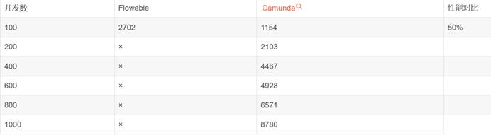
Camunda 我们还能正常的测试，Flowable 在并发 100 的情况下还可以，但是 200 的时候就直接没有了反应。
结论：对并发量有要求的强烈推荐 Camunda
# Activiti7.1, jBPM7.25, Camunda, Flowable6.3 技术组成对比
| 序号 | 技术组成 | Activiti7.1 | jBPM7.25 | Camunda | Flowable6.3.1 |
|---|---|---|---|---|---|
| 1 | 数据库持久层 ORM | MyBatis3.4.2 | JPA2.2 二次封装 | Hibernate4.2.0 | JPA 2.2 |
| 2 | 持久化标准 | JPA 规范 | JPA 规范 | JPA 规范 | JPA 规范 |
| 3 | 事务管理 | MyBatis 机制 / Spring 事务控制 | Bitronix， 基于 JTA 事务管理 | hibernate 机制 / Spring 事务控制 | hibernate 机制 / Spring 事务控制 |
| 4 | 分布式事务 | MyBatis 机制 / Spring 事务控制 | Bitronix， 基于 JTA 事务管理 | 补偿机制， SAGA 模式 | |
| 4 | 数据库连接方式 | Jdbc/DataSource | Jdbc/DataSource | Jdbc/DataSource | Jdbc/DataSource |
| 5 | 支持数据库 | Oracle、SQL Server、MySQL | Oracle、SQL Server、MySQL | Oracle、SQL Server、MySQL、db2 | Oracle、SQL Server、MySQL、db2 |
| 6 | 设计模式 | Command 模式、观察者模式等 | |||
| 7 | 内部服务通讯 | Service 间通过 API 调用 | 基于 Apache Mina 异步通讯 | Service 间通过 API 调用 | Service 间通过 API 调用 |
| 8 | 集成接口 | SOAP、Mule、 RESTful | 消息通讯 | SOAP、Mule、RESTful | SOAP、Mule、RESTful |
| 9 | 支持的流程格式 | BPMN2、xPDL、jPDL 等 | 目前仅只支持 BPMN2 xml | BPMN2、xPDL、jPDL 等 | BPMN2、xPDL、jPDL 等 |
| 10 | 引擎核心 | PVM（流程虚拟机） | Drools | PVM | |
| 11 | 架构 | spring boot 2.1.2, spring 5.1.4 | Drools Flow | activiti5 | spring boot 1.5, spring 4.3， spring security 4.2 |
| 12 | 支持 J2EE | 兼容 | 天然支持 EJB,J2EE | 兼容 | 兼容 |
| 13 | 技术前身 | jBPM3、jBPM4 | Drools Flow | activiti5 | activiti5 |
| 14 | API 文档 | swagger1.5 | swagger1.5 | ||
| 15 | 日志 | slf4j1.7 门面， logback1.2.3 | slf4j1.5 门面，log4j | slf4j1.7 门面， logback1.2.3 | slf4j1.7 门面 |
| 16 | 所属公司 | Alfresco | jBoss.org | Camunda | Flowable |
# camunda 与 flowable 对比
- \1. camunda 支持流程实例的迁移，比如同一个流程有多个实例，多个流程版本，不同流程实例运行在不同的版本中，camunda 支持任意版本的实例迁移到指定的流程版本中，并可以在迁移的过程中支持从哪个节点开始。
- \2. camunda 基于 PVM 技术，所以用户从 Activii5 迁移到 camunda 基本上毫无差异。flowable 没有 pvm 了，所以迁移工作量更大（实例的迁移，流程定义的迁移、定时器的迁移都非常麻烦）。
- \3. camunda 对于每一个 CMD 命令类都提供了权限校验机制，flowable 没有。
- \4. camunda 继续每一个 API 都有批处理的影子，flowable 几乎没有。比如批量挂起流程、激活流程等，使用 camunda 可以直接使用 API 操作，使用 Flowable 则只能自己去查询集合，然后循环遍历集合并操作。
- \5. camunda 很多 API 均支持批处理，在批量处理的时候可以指定是异步方式操作或者是同步方式操作。异步的话定时器会去执行。Flowable 没有异步批处理的机制。比如批量异步删除所有的历史数据。
- \6. camunda 启动实例的时候支持从哪个节点开始，而不是仅仅只能从开始节点运转实例。Flowable 仅仅只能从开始节点运转实例。
- \7. camunda 支持任意节点的跳转，可以跳转到连线也可以跳转到节点，并且在跳转的过程中支持是否触发目标节点的监听器。flowable 没有改原生 API 需用户去扩展。
- \8. camunda 支持双异步机制，第一个异步即节点可以异步执行，第二个异步方式是：完成异步任务后，还可以继续异步去执行任务后面的连线。所以称之为双异步机制，flowable 只有第一种异步方式。
- \9. camunda 支持多种脚本语言，这些脚本语言可以在连线上进行条件表达式的配置，开箱即用。比如 python、ruby、groovy、JUEL。flowable 仅仅支持 JUEL、groovy。开箱即用的意思就是如果想用 python 直接引入 jython 包就可以用了，不需要额外配置。
- \10. camunda 支持外部任务，比如我们有时候想在一个节点中执行调用第三方的 API 或者完成一些特定的逻辑操作，就可以使用外部任务，外部任务有两种表，并支持第三方系统定期来抓取并锁定外部任务，然后执行业务完毕之后，完成外部任务，流程实例继续往下执行。外部任务的好处就是解决了分布式事物的问题。在 flowable 中我们可以使用 httpTask 任务，我个人更倾向于 camunda 外部任务，因为这个外部任务有外部系统决定什么时候完成，httpTask 是不等待任务，实例走到这个节点之后，调用一个 api 就直接往下跑了，外部任务不会继续往下跑，有外部系统去决定啥时候往下跑。
- \11. camunda 支持为用户定制一些个性化的偏好查找 API，比如张三每次查询任务的时候，一般固定点击某某三个查询条件过滤数据，使用 camunda 就可以将这三个查询条件进行持久化，下次张三来了，就可以直接根据他的偏好进行数据的过滤，类似机器学习。
- \12. camunda 支持历史数据的批量删除或者批量迁移到其他介质，比如批量迁移到 es，flowable 没有该机制。
- \13. camunda 支持在高并发部署流程的时候，是否使用锁机制，flowable 没有该机制。
- \14. camunda 支持单引擎多组合、多引擎多库。flowable 仅仅支持单引擎多组合。
- \15. camunda 支持流程实例跨流程定义跳转，flowable 没有该机制。
- \16. camunda 支持分布式定时器，flowable 没有该机制。
- \17. flowable 支持 NoSQL, camunda 只有 NoSQL 的解决方案。
- \18. camunda 支持优化流程，以及了解流程引擎的瓶颈所在和每个环节的耗时，flowable 没有该机制。
- \19. camunda 修改了流程模板 xml 解析方式，相比 flowable 性能更好。
- \20. camunda 在解析流程模板 xml 的时候，去除了 activiti5 的双解析机制，相对而言耗时时间更短。flowable 没有了 pvm 所以规避了双解析机制。
- \21. camunda 可以在任意节点添加任意的属性，flowable 原生 API 没有，需要自己扩展。
- \22. camunda 框架没有为流程生成图片的 API (所有流程图展示以及高亮均在前端动态计算)，activiti5/6/flowable5/flowable6 有图片生成以及高亮的 API.
- \23. camunda 可以在节点中定义定时作业的优先级，也可以在流程中进行全局优先级的定义。当节点没有定义优先级的时候可以使用全局的优先级字段。activiti5/6/flowable5/flowable6 没有改功能。
- \24. camunda 可以再流程中定义流程的 tag 标记，activiti5/6/flowable5/flowable6 没有改功能。
- \25. camunda/activiti5/6/flowable5/flowable6 均不支持国产数据库，比如人大金仓和达梦。
- \26. flowable6 支持 LDAP，openLDAP, camunda 不支持。activiti5 不支持。
# 性能方面对比
通过 flowable 和 camunda 多组对比测试，camunda 性能比 flowable 提升最小 10%，最大 39%，而且 camunda 无报错，flowable 有报错，camunda 在高并发场景下稳定性更好。
# 流程设计器 选型
对于低代码平台中的流程可视化，流程设计器是重要的支撑工具，目前市场上比较主流的流程设计器有 bpmn-js、Mx Graph、Activiti-Modeler、flowable-modeler、easy-flow、bpmn2-modeler 插件等。
# bpmn-js
Web-based tooling for BPMN, DMN, CMMN, and Forms | bpmn.io
bpmn-js 是 BPMN 2.0 渲染工具包和 Web 模型。bpmn-js 正在努力成为 Camunda BPM 的一部分。
bpmn-js 使用 Web 建模工具可以很方便的构建 BPMN 图表，可以把 BPMN 图表嵌入到项目中，容易扩展。bpmn-js 是基于原生 js 开发，支持集成到 Vue、react 等开源框架中。
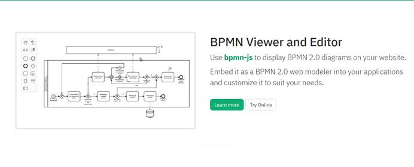
# mxGraph
官方网站：http://jgraph.github.io/mxgraph/
mxGraph 是一个强大的 JavaScript 流程图前端库，可以快速创建交互式图表和图表应用程序，国内外著名的 ProcessOne 和 draw.io 都是使用该库创建的强大的在线流程图绘制网站。由于 mxGraph 是一个开放的 js 绘图开发框架，我们可以开发出很炫的样式，或者完全按照项目需求定制。
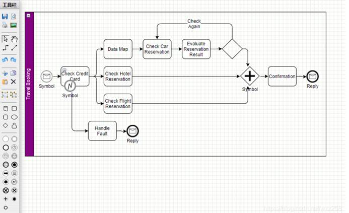
# Activiti-Modeler
Activiti 开源版本中带了 web 版流程设计器，在 Activiti-explorer 项目中有 Activiti-Modeler，优点是集成简单，开发工作量小，缺点是界面不美观，用户体验差。
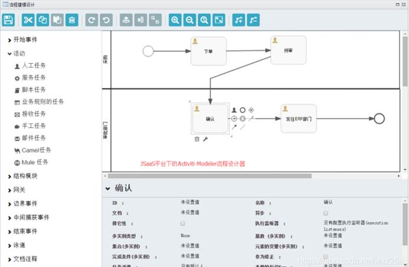
# flowable-modeler
flowable 开源版本中带了 web 版流程设计器，展示风格和功能基本跟 Activiti-Modeler 一样，优点是集成简单，开发工作量小，缺点是界面不美观，用户体验差。
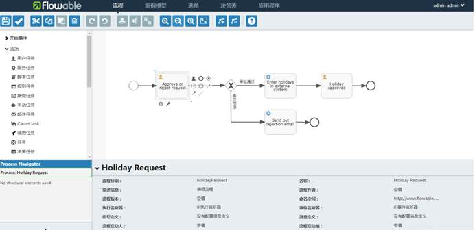
# 市面现有的低代码 BMP 平台
# 驰聘
...
# Ultimus（安码）
...
# 泛微
...
# 引用
常见的工作流引擎 (osworkflow、jbpm、activiti、flowable、camunda) 比较 - CSDN 博客